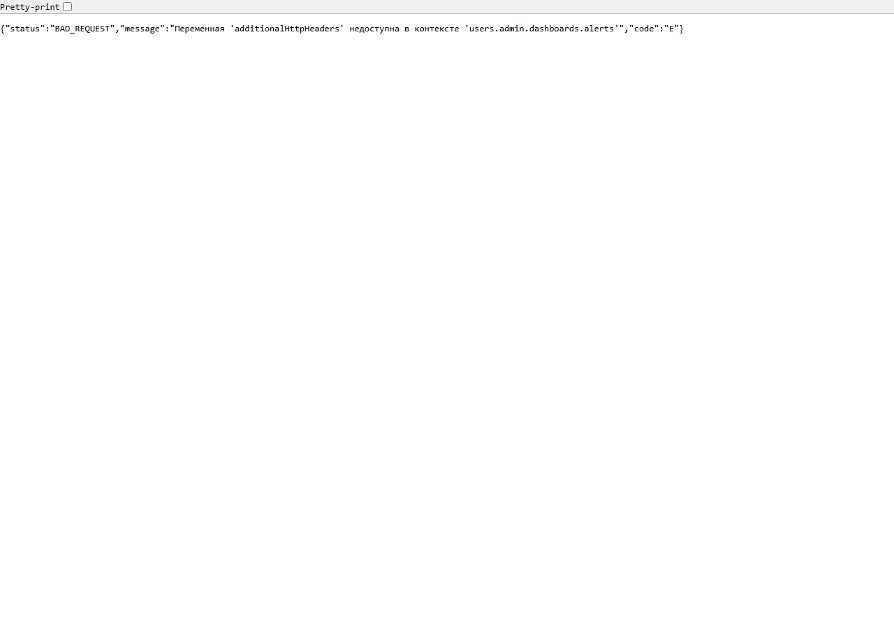
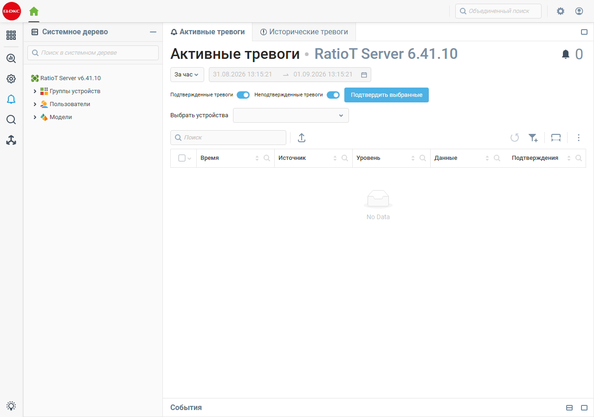
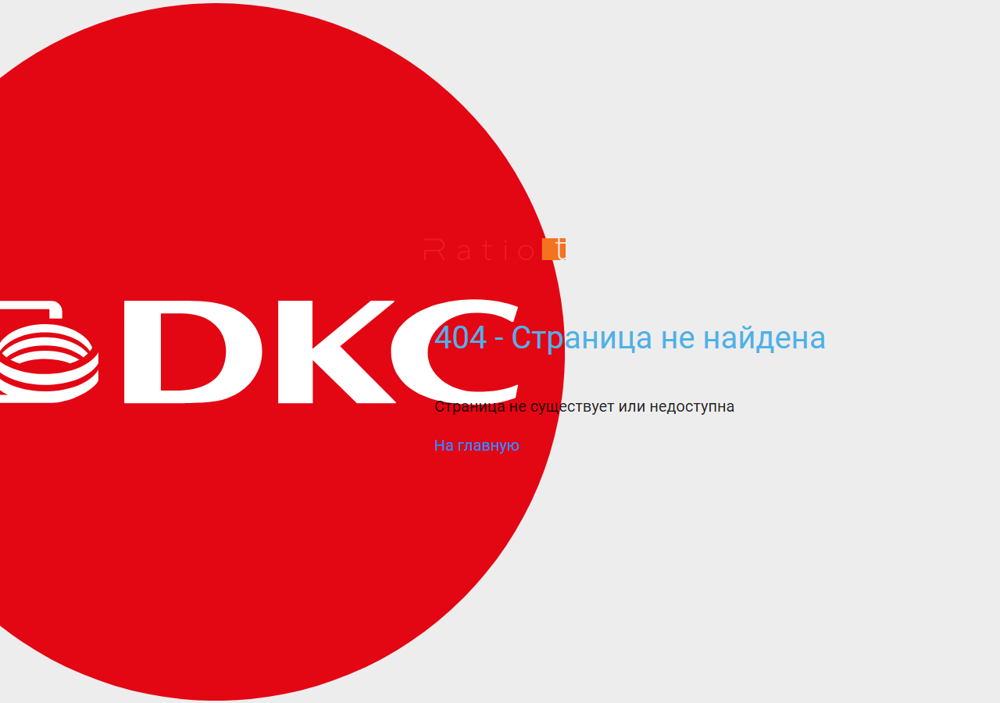
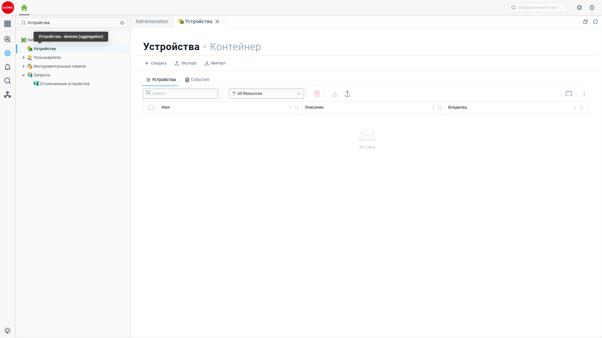
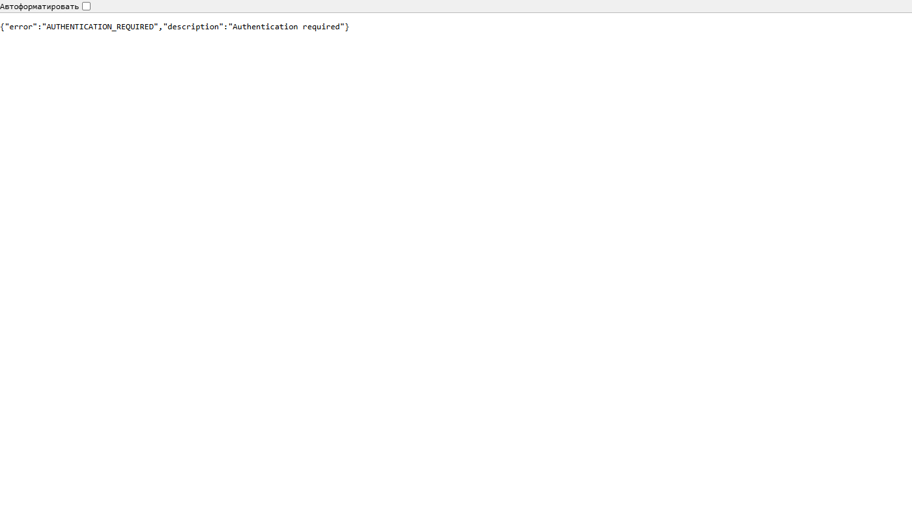

Отчёт по баг-кейсам RatioT SCADA 6.41.09–6.41.10
Скачать PDFСводная таблица
Сообщённые Агрегейту
Кейс 1. Режимы лицензирования free / trial не описаны в документации
Описание
Инсталлятор RatioT SCADA 6.41.09 предлагает выбор между двумя режимами на этапе установки: - Пробная лицензия (30 дней) - Бесплатная лицензия на 100 тэгов
Важно: режим с ограничением в 100 тегов устанавливается исключительно через инсталлятор при первой установке. В самом веб-интерфейсе RatioT SCADA и в документации нет управления или описания этого режима.
Однако в официальной документации (licensing.htm, ls_license_server.htm, ls_config_license_server.htm, ls_requirements.htm) описаны только именные лицензии, привязанные к инсталляции, и централизованный сервер лицензий. Пробный и бесплатный режимы не упоминаются.
Воспроизведение
- Запустить установку
RatioT SCADA 6.41.09. - На шаге «Выберите тип лицензии» увидеть два варианта: «Пробная лицензия (30 дней)» и «Бесплатная лицензия на 100 тэгов».
- Открыть
https://localhost:8443/static/docs/licensing.htm. - Убедиться, что раздел описывает только именные лицензии и активационный ключ.
- Проверить
ls_license_server.htmиls_config_license_server.htm— там также нет описания free/trial.
Ожидаемый результат
Документация должна содержать раздел о бесплатном и пробном режимах: какие ограничения, как переключаться, что происходит по истечении срока/при превышении лимита тегов, можно ли использовать в продакшене.
Фактический результат
Пользователь видит в инсталляторе режимы, о которых в документации ни слова. Непонятно: - чем отличаются free и trial; - что будет после 30 дней или после 100 тегов; - можно ли перейти с free/trial на полную лицензию без переустановки.
Скриншоты
 — диалог выбора лицензии в инсталляторе
— диалог выбора лицензии в инсталляторе
Ссылки на документацию
admin/custom/templates/docs/licensing.htmadmin/custom/templates/docs/ls_license_server.htmadmin/custom/templates/docs/ls_config_license_server.htm
Кейс 2. Инсталлятор запрашивает перезапись собственных файлов
Описание
При установке RatioT SCADA 6.41.09 инсталлятор выдаёт диалог «Файл уже существует. Вы хотите, чтобы программа установки заменила его?» для файлов внутри C:\Program Files\RatioTScada\admin\custom\templates\docs_ru\wizard_1.png и wizard_2.png. Это создаёт впечатление, что установка повторяется поверх существующей, или что инсталлятор не может корректно управлять своими же файлами.
Воспроизведение
- Запустить установку RatioT SCADA 6.41.09.
- Пройти шаги до копирования файлов.
- Дождаться диалога с предложением заменить
docs_ru\wizard_1.png. - Нажать «Да для всех».
- Через некоторое время появится аналогичный диалог для
docs_ru\wizard_2.png.
Ожидаемый результат
На чистой установке инсталлятор не должен спрашивать о перезаписи собственных файлов. Если это обновление — должен быть единый диалог «Заменить все» или тихая перезапись без лишних подтверждений.
Фактический результат
Пользователь вынужден несколько раз вручную подтверждать перезапись файлов, которые только что были скопированы установщиком. Это выглядит как ошибка упаковки инсталлятора: одни и те же файлы попадают в разные компоненты/директории и конфликтуют при распаковке.
Скриншоты
 — диалог перезаписи
— диалог перезаписи wizard_1.png — диалог перезаписи
— диалог перезаписи wizard_2.png
Кейс 3. Импорт Modbus-регистров из CSV/XML теряет имена, описания и адреса; экспорт в CSV портит русскую кодировку
Описание
При создании пустого Modbus-устройства и импорте регистров из ранее экспортированных файлов CSV/XML теряются имя, описание, адрес, размер и другие поля. Импорт того же файла в формате .tbl работает корректно. Кроме того, окно экспорта не содержит кнопки закрытия — чтобы выйти, пользователь вынужден что-то экспортировать. При экспорте регистров с русскими именами/описаниями в CSV в полученном файле русский текст отображается кракозябрами.
Воспроизведение
- Открыть
https://localhost:8443и войти подadmin / admin. - Перейти в дереве: Устройства → modbus → Конфигурация → Регистры устройства.
- Создать несколько регистров с именами и описаниями на русском языке.
- Нажать кнопку экспорта и сохранить файл в форматах
.csv,.xml,.tbl. - Удалить все регистры или создать новое пустое Modbus-устройство.
- Импортировать сохранённые
.csvи.xml. - Сравнить заполненность полей с исходными данными и с импортом
.tbl. - Открыть экспортированный
.csvв Excel/Notepad++ и проверить кодировку русских строк.
Ожидаемый результат
- CSV и XML импортируют все поля аналогично
.tbl. - Диалог экспорта можно закрыть без выполнения экспорта.
- CSV-файл содержит корректную UTF-8 / Windows-1251 кодировку для русских символов.
Фактический результат
- После импорта CSV/XML поля Имя, Описание, Десятичный адрес, Размер остаются пустыми.
- Диалог экспорта нельзя закрыть без экспорта.
- CSV-файл содержит нечитаемые символы вместо русского текста.
Уточнение по лицензированию
При проверке на текущей trial-лицензии (Trial License, 0/100 устройств) в диалоге добавления устройства драйвер Modbus отсутствует. В списке доступны IEC-104, Агент, BACnet, DNP3 и др., но Modbus нет. Это не позволяет лично воспроизвести импорт/экспорт регистров в данном контуре. Скриншоты самого бага (пустые поля, кодировка) предоставлены коллегами с полноценной лицензией.
Скриншоты
 — пустое устройство modbus перед импортом
— пустое устройство modbus перед импортом — после импорта CSV: пустые имена/описания и адреса
— после импорта CSV: пустые имена/описания и адреса — после импорта TBL: данные на месте
— после импорта TBL: данные на месте — диалог экспорта без кнопки закрыть
— диалог экспорта без кнопки закрыть — CSV с искажённой кодировкой
— CSV с искажённой кодировкой — драйвер Modbus отсутствует в списке доступных драйверов (trial-лицензия)
— драйвер Modbus отсутствует в списке доступных драйверов (trial-лицензия)
Кейс 4. В дереве тегов невозможно выбрать абсолютную модель в качестве источника
Описание
На вебинаре по RatioT SCADA 6.4 озвучивалось, что при привязке тегов цифрового двойника в дереве тегов источником можно выбирать не только устройство, но и абсолютную модель. В текущей версии такой возможности нет, а в документации описание отсутствует.
Воспроизведение
- Открыть Дерево тегов.
- Попытаться настроить источник для тега цифрового двойника.
- В диалоге выбора источника проверить список доступных вариантов.
Уточнение по лицензированию
При проверке на trial-версии раздел Дерево тегов в системном дереве и в поиске отсутствует. Это не позволяет лично воспроизвести диалог выбора источника в данном контуре. Скриншоты с отсутствием абсолютной модели предоставлены коллегами с полноценной лицензией.
Ожидаемый результат
- Дерево тегов доступно в лицензии.
- В диалоге выбора источника доступен выбор абсолютной модели.
- Функция описана в документации.
Фактический результат
- В trial-версии раздел "Дерево тегов" отсутствует.
- Скриншоты коллег показывают, что выбор источника ограничен устройствами; абсолютная модель не доступна.
Скриншоты
 — диалог выбора источника, список пуст/отсутствует абсолютная модель
— диалог выбора источника, список пуст/отсутствует абсолютная модель — поиск "тег" не находит раздел "Дерево тегов" в trial-версии
— поиск "тег" не находит раздел "Дерево тегов" в trial-версии
Кейс 5. Переключение хранилища событий на NoSQL-хранилище приводит сервер в неработоспособное состояние
Описание
В настройках сервера, раздел Хранилище → База данных, пункт Хранилище событий по умолчанию отключён. Если выбрать NoSQL-хранилище, сервер уходит в перезапуск и больше не восстанавливается. Утилита configurator для версии 6.41 отсутствует, что не позволяет восстановить конфигурацию.
Воспроизведение
⚠️ Выполнять только на тестовом контуре с возможностью переустановки. 1. Открыть Настройки → Хранилище → База данных. 2. Для пункта Хранилище событий выбрать NoSQL-хранилище. 3. Сохранить конфигурацию. 4. Наблюдать перезапуск сервера.
Ожидаемый результат
Сервер перезапускается и продолжает работать с выбранным хранилищем; либо операция блокируется с понятным сообщением о неподдерживаемой конфигурации.
Фактический результат
Сервер не восстанавливается; конфигурация может быть потеряна; отсутствует утилита для ручного восстановления.
Уточнение
При проверке на trial-версии вкладка Хранилище → База данных доступна, и в ней видно, что Хранилище событий по умолчанию Отключено. Рядом расположен выпадающий список с вариантом NoSQL хранилище. Само переключение не производилось, чтобы не вывести сервер из строя.
Скриншоты
 — скриншот коллег: выпадающий список хранилищ
— скриншот коллег: выпадающий список хранилищ — вкладка Хранилище → База данных, "Хранилище событий" = "Отключено"
— вкладка Хранилище → База данных, "Хранилище событий" = "Отключено"
Кейс 6. Установка в нестандартную папку + замена лицензии приводит к отказу лицензирования и новому activation key
Описание
При установке RatioT SCADA в папку, отличную от предыдущей, инсталлятор всё равно запрашивает согласие на копирование/перезапись файлов. После замены файла лицензии в новой папке программа продолжает сообщать об отсутствии лицензии. Служба сервера запускается и перезапускается, но веб-сервер не отвечает. В итоге требуется полное удаление всех версий; при новой установке генерируется новый activation key, и старая лицензия не принимается.
Воспроизведение
- Установить RatioT SCADA в папку A (например,
C:\Program Files\RatioTScada). - Получить и сохранить файл лицензии для activation key A.
- Установить ту же или новую версию RatioT SCADA в папку B (например, другой диск или подпапку).
- На шаге копирования согласиться с перезаписью/копированием файлов.
- Подменить файл лицензии в папке B файлом от папки A.
- Запустить сервер.
Ожидаемый результат
- Инсталлятор корректно определяет новую директорию и не запрашивает перезапись.
- Замена файла лицензии приводит к её активации, либо в интерфейсе есть понятная инструкция, как обновить ключ.
- Веб-сервер становится доступен после запуска службы.
Фактический результат
- Инсталлятор требует подтверждения копирования даже при разных папках.
- Лицензия не активируется; сервер не отвечает по вебу.
- После удаления и переустановки генерируется новый activation key, и старая лицензия не подходит.
Скриншоты
 — в веб-интерфейсе открыта страница Информация о сервере
— в веб-интерфейсе открыта страница Информация о сервере — вкладка Лицензионная информация показывает
— вкладка Лицензионная информация показывает Trial License, оставшееся время 29 дней, максимальное количество устройств 100
Новые баги
Кейс 7. Ошибки создания ресурсов при первом запуске сервера
Описание
При первом запуске RatioT_server_console.exe сервер стартует, но в журнале фиксируются 3 ERROR. Часть встроенных моделей и отчётов не инициализируется.
Воспроизведение
- Установить RatioT SCADA 6.41.09 на чистую Windows.
- Запустить
C:\Program Files\RatioTScada\RatioT_server_console.exe. - Дождаться строки
Starting web server. - Открыть
C:\Program Files\RatioTScada\logs\server.log. - Найти строки с
ERROR ag.context.
Ожидаемый результат
Первый запуск завершается без ERROR/FATAL.
Фактический результат
13.08.2026 12:47:25,471 ERROR ag.context
Error creating resource 'users.admin.models.avatarManagement':
Cannot invoke "...Context.callFunction(...)" because "container" is null
13.08.2026 12:47:25,733 ERROR ag.context
Error creating resource 'users.admin.reports.maintenance':
Контекст недоступен: users.admin.reports
13.08.2026 12:47:26,509 ERROR ag.context
Error creating resource 'users.admin.models.workflowModel':
Cannot invoke "...Context.callFunction(...)" because "container" is null
Скриншоты
 — фрагмент
— фрагмент server.logс ошибками инициализации ресурсов
Кейс 8. Настройки колонок компонента eventLog сбрасываются при поступлении событий
Описание
В дашборде добавлен элемент Журнал событий (eventLog). В расширенных настройках на вкладке Колонки включена опция «Ширина колонок настроена вручную», задан порядок колонок, их ширина и видимость. Настройки применяются, пока событий нет; как только поступает событие, таблица возвращается к дефолтному виду и отображаются все колонки, включая скрытые.
Воспроизведение
- Открыть дашборд (например,
АВР.Главный экран). - Добавить или отредактировать компонент Журнал событий.
- В разделе Расширенные → Колонки включить «Ширина колонок настроена вручную».
- Скрыть колонки Подтверждение и Обогащение, задать порядок и ширину остальных.
- Сохранить дашборд.
- Дождаться/сгенерировать событие (например, переключение режима работы).
- Убедиться, что таблица вернулась к стандартному набору колонок.
Ожидаемый результат
Настроенные колонки сохраняются независимо от наличия событий.
Фактический результат
При поступлении события отображаются все колонки, настройки не применены.
Уточнение по лицензированию
При проверке на trial-версии редактор дашбордов в веб-клиенте недоступен (нет кнопки/раздела для добавления/редактирования компонентов), поэтому лично воспроизвести настройку колонок eventLog в данном контуре не удалось. Скриншоты бага предоставлены коллегами с полноценной лицензией.
Скриншоты
 — редактор дашборда с выделенным eventLog
— редактор дашборда с выделенным eventLog — настройки колонок без данных
— настройки колонок без данных — список полей eventLog
— список полей eventLog — журнал с событием: видны все колонки
— журнал с событием: видны все колонки — после события настройки не восстановились
— после события настройки не восстановились
Кейс 9. HTML-сниппет сдвигает layout дашборда; после обновления страницы сбрасывается
Описание
При добавлении на дашборд компонента HTML-сниппет с произвольным HTML/CSS происходит сдвиг всего layout дашборда вниз. После обновления страницы (F5) дашборд возвращается к стандартному виду, но при повторном открытии редактора сдвиг появляется снова.
Воспроизведение
- Открыть редактор дашборда.
- Добавить компонент HTML-сниппет.
- Вставить код, содержащий
<!DOCTYPE html>,<html>,<body>и стили. - Сохранить дашборд.
- Перейти к визуализации — убедиться, что элементы дашборда съехали ниже.
- Обновить страницу — layout вернулся к норме.
- Снова открыть редактор — сдвиг воспроизводится.
Ожидаемый результат
HTML-сниппет отображается внутри выделенной области без влияния на остальную вёрстку дашборда. Состояние сохраняется после обновления страницы.
Фактический результат
Визуализация дашборда сдвигается вниз; после F5 временно восстанавливается.
Уточнение по лицензированию
При проверке на trial-версии редактор дашбордов в веб-клиенте недоступен: нет кнопки "Редактировать" для существующих дашбордов и нет возможности добавить HTML-сниппет. Попытки открыть URL /.../edit приводят к странице 404 (см. кейс 16). Поэтому лично воспроизвести сдвиг layout в данном контуре не удалось. Скриншоты бага предоставлены коллегами с полноценной лицензией.
Скриншоты
 — редактор с добавленным HTML-сниппетом
— редактор с добавленным HTML-сниппетом — фрагмент вставленного HTML/CSS
— фрагмент вставленного HTML/CSS — дашборд съехал вниз
— дашборд съехал вниз — визуализация после обновления страницы
— визуализация после обновления страницы — второй пример: HTML-игра в редакторе
— второй пример: HTML-игра в редакторе — та же игра в режиме просмотра
— та же игра в режиме просмотра
Кейс 10. Локальный магазин приложений отсутствует в веб-клиенте
Описание
В дистрибутиве RatioT SCADA присутствует локальный файл магазина приложений C:\Program Files\RatioTScada\store\store.xml. Документация (ls_store.htm) описывает магазин приложений как способ распространения модулей и решений, а также указывает, что в системном дереве должен быть доступен плагин Магазин под разделом Драйверы и расширения. Однако в веб-клиенте отсутствует какой-либо раздел или плагин «Магазин приложений». Если пользователь удалит приложение/модуль, восстановить его из локального магазина через веб-интерфейс невозможно.
Воспроизведение
- Установить RatioT SCADA 6.41.09.
- Убедиться, что файл
C:\Program Files\RatioTScada\store\store.xmlсуществует. - Открыть
https://localhost:8443и войти подadmin / admin. - В системном дереве слева раскрыть Драйверы и расширения.
- В поле поиска ввести Магазин.
Ожидаемый результат
- В системном дереве доступен плагин Магазин приложений (Store Client).
- Через него можно просматривать, устанавливать и восстанавливать модули из локального или публичного магазина.
Фактический результат
- В системном дереве нет плагина Магазин приложений.
- Поиск по слову Магазин не возвращает результатов.
- Локальный
store.xmlсуществует, но недоступен через UI. - Удалённые приложения/модули нельзя восстановить через веб-клиент.
Скриншоты
 — поиск "Магазин" в дереве не находит раздел
— поиск "Магазин" в дереве не находит раздел
Пруф из документации
В admin/custom/templates/docs/ls_store.htm сказано:
«Магазин приложений — это особый RatioT Server, на котором работает модуль "marketplace" (Store Server), и который предоставляет решения и модули для других серверов RatioT SCADA. Другие экземпляры RatioT Server могут подключиться к Магазину и загрузить предлагаемые решения и модули при помощи модуля Store Client. ... Функционал Магазина обеспечивается плагином Store Client, который скачивает решения и модули с серверов Магазина приложений...»
То есть документация декларирует наличие плагина Store Client для загрузки/восстановления модулей, но в веб-клиенте он отсутствует.
Кейс 11. Вёрстка страницы 404
Описание
При обращении к несуществующей странице (например, через внутреннюю навигацию SPA) отображается страница 404 с огромным логотипом DKC, который перекрывает центр экрана. Текст «404 — Страница не найдена» и ссылка «На главную» накладываются на красный круг логотипа, что делает сообщение трудночитаемым.
Воспроизведение
- Войти в веб-интерфейс RatioT SCADA.
- Перейти по URL, который не существует (например, открыть несуществующий путь внутри SPA).
- Убедиться, что отображается страница 404 с логотипом DKC.
Ожидаемый результат
Страница 404 содержит чёткое, центрированное сообщение об ошибке без перекрытия текстом логотипа. Логотип либо отсутствует, либо расположен так, чтобы не мешать чтению.
Фактический результат
Логотип DKC занимает большую часть экрана, а текст ошибки наложен на красный фон логотипа. Визуально выглядит некорректно.
Скриншоты
 — страница 404, текст перекрыт логотипом DKC
— страница 404, текст перекрыт логотипом DKC
Кейс 12. Раздел «Драйвера и расширения» открывает корень системного дерева вместо плагинов
Описание
В системном дереве веб-клиента присутствует раздел «Драйвера и расширения» (уже с грамматической ошибкой: правильно «Драйверы и расширения»). При его открытии справа загружается контейнер с тем же названием, но содержимое представляет собой корень системного дерева: Устройства, Группы устройств, Пользователи, Приложения, Модели и т.д. — то есть общий список ресурсов сервера, а не драйверы/плагины. Tooltip раздела на английском языке: plugins (pluginsGlobalConf).
Воспроизведение
- Войти в веб-клиент
https://localhost:8443подadmin / admin. - В системном дереве слева найти и открыть раздел Драйвера и расширения.
- Обратить внимание на заголовок и содержимое правой панели.
- Навести курсор на раздел в дереве — появится tooltip.
Ожидаемый результат
- Раздел называется «Драйверы и расширения».
- В правой панели отображаются установленные драйверы, плагины и расширения.
- Tooltip локализован на русский язык.
Фактический результат
- Название раздела содержит ошибку: «Драйвера и расширения».
- В контейнере отображаются корневые ресурсы сервера, а не драйверы/плагины.
- Tooltip содержит английский технический текст
plugins (pluginsGlobalConf).
Скриншоты
 — раздел открывает общий контейнер ресурсов, tooltip на английском
— раздел открывает общий контейнер ресурсов, tooltip на английском
Кейс 13. Вкладки «Информации о сервере» обрезаются и не переносятся
Описание
На странице Информация о сервере в правой части расположена строка вкладок: Сервер, Хранилище, Статистика контекстов, Статистика выражений, Статистика устройств, Лицензионная информация, Активные расширения, Установленные расширения и др. При стандартной ширине окна часть вкладок обрезается и не помещается в строку. Нет ни горизонтальной прокрутки, ни переноса вкладок, ни выпадающего меню «Ещё».
Воспроизведение
- Войти в веб-клиент.
- Открыть Информация о сервере.
- Обратить внимание на строку вкладок в правой части.
Ожидаемый результат
Все вкладки доступны: переносятся на следующую строку, прокручиваются или сворачиваются в меню.
Фактический результат
Последние вкладки обрезаются (например, «Активные расширения» видно частично, «Установленные расширения» скрыта).
Скриншоты
 — вкладки не помещаются в строку
— вкладки не помещаются в строку
Кейс 14. Раздел «Пользователи» открывает корень системного дерева вместо списка пользователей
Описание
В системном дереве веб-клиента раздел Пользователи при открытии загружает контейнер с тем же названием, но внутри отображает не учётные записи пользователей, а корневые ресурсы сервера: Устройства, Группы устройств, Пользователи, Приложения, Модели и т.д. То есть раздел не выполняет свою функцию.
Воспроизведение
- Войти в веб-клиент под
admin / admin. - В системном дереве слева открыть Пользователи.
- Посмотреть содержимое правой панели.
Ожидаемый результат
В правой панели отображается список пользователей сервера (admin, testuser02 и др.) с возможностью их редактирования.
Фактический результат
В правой панели отображается корень системного дерева, а не пользователи.
Скриншоты
 — вместо списка пользователей показаны системные ресурсы
— вместо списка пользователей показаны системные ресурсы
Кейс 15. Ссылки в демо-приложении ведут на сайт AggreGate вместо RatioT/BUFFLAB
Серьёзность: Medium
Описание
В стартовой странице демо-приложения разделы «Документация» и «Онлайн» содержат ссылки, которые ведут на aggregate.digital, а не на актуальные ресурсы RatioT SCADA / BUFFLAB.
Воспроизведение
- Открыть демо-приложение SCADA/HMI в веб-клиенте.
- На стартовой странице выбрать ссылку в блоке «Документация» или «Онлайн».
- Браузер переходит на
aggregate.digital/docs/aggregate/ru_6.4/scada_hmi.htm.
Ожидаемый результат
Ссылки ведут на сайт RatioT SCADA / BUFFLAB (например, на внутреннюю документацию или маркетинговый сайт RatioT).
Фактический результат
Ссылки ведут на сайт AggreGate, в том числе на раздел с описанием «AggreGate SCADA/HMI».
Скриншоты
 — блок Документация/Онлайн ведёт на AggreGate
— блок Документация/Онлайн ведёт на AggreGate — браузер на aggregate.digital
— браузер на aggregate.digital
Кейс 16. Дашборд «Тревоги» не открывается в веб-клиенте
Серьёзность: High
Описание
Дашборд «Тревоги» (возможно, созданный в десктопном клиенте) не открывается в веб-клиенте. Вместо содержимого выводится ошибка.
Воспроизведение
- В веб-клиенте открыть раздел «Тревоги» / дашборд тревог.
- Дождаться загрузки.
Ожидаемый результат
Дашборд отображается в веб-клиенте.
Фактический результат
- В версии 6.41.09: модальное окно ошибки «Дашборд был создан оконным клиентом и не поддерживается WEB клиентом».
- В версии 6.41.10: при открытии дашборда
users.admin.dashboards.alertsвместо HTML-страницы возвращается JSON-ошибка сервера:json {"status":"BAD_REQUEST","message":"Переменная 'additionalHttpHeaders' недоступна в контексте 'users.admin.dashboards.alerts'","code":"E"}При этом смежный дашбордusers.admin.dashboards.alertsMonitoring(«Активные тревоги») открывается корректно.
Скриншоты



Кейс 17. Пустые шаблоны задвижек, насосов и других устройств
Серьёзность: Medium
Описание
При открытии шаблонов устройств (задвижек, насосов и др.) основная рабочая область остаётся пустой. Не понятно, это дефект данных или такое поведение ожидается.
Воспроизведение
- В системном дереве открыть «Инструментальные панели → Группы инструментальных панелей → Шаблон задвижка».
- Выбрать конкретный шаблон, например «Шаблон Задвижка V2 (Dockable)».
Ожидаемый результат
Отображается содержимое шаблона (поля, параметры, визуальный редактор).
Фактический результат
Правая панель пустая.
Скриншоты

Кейс 18. Бесконечная загрузка и JS-ошибка при редактировании демо-проектов
Серьёзность: High
Описание
При попытке редактирования демо-проектов элементы дашборда показывают бесконечные спиннеры. В консоли/модальном окне появляется JS-ошибка инициализации дашборда.
Воспроизведение
- Открыть демо-проект в режиме редактирования (например,
users.admin.dashboards.milkStorage). - Дождаться загрузки.
Ожидаемый результат
Дашборд загружается и доступен для редактирования.
Фактический результат
Бесконечные индикаторы загрузки. Ошибка:
Error init dashboard "users.admin.dashboards.ioField".
Cannot read properties of null (reading 'getContextManager')
TypeError: Cannot read properties of null (reading 'getContextManager')
at Ft.initComponentsInternal (...)
at Ft.initComponents (...)
at Ft.initServer (...)
at async Uo.loadDashboard (...)
at async r.prepareSubDashboardModel (...)
at async Promise.allSettled (index 0)
Скриншоты


Кейс 19. Скриншоты и изображения AggreGate в справке и демо-проектах
Серьёзность: Low
Описание
Во встроенной справке и демо-проектах встречаются скриншоты/изображения с брендингом AggreGate (логотип, цветовая схема, название).
Воспроизведение
- Открыть встроенную справку или демо «Дом».
- Обратить внимание на картинки/приветственные экраны.
Ожидаемый результат
Все иллюстрации содержат брендинг RatioT SCADA / BUFFLAB.
Фактический результат
Видны логотип и тексты AggreGate.
Скриншоты


Кейс 20. Не отображаются изображения в демо-проекте Романа Шиндина
Серьёзность: Medium
Описание
В присланном демо-проекте Романа Шиндина вместо изображений/иконок отображаются битые плейсхолдеры.
Воспроизведение
- Открыть указанный демо-проект.
- Просмотреть элементы, где должны быть картинки.
Ожидаемый результат
Изображения загружаются корректно.
Фактический результат
Видны пустые плейсхолдеры вместо изображений.
Скриншоты

Кейс 21. Не работает активация метаданных устройства
Серьёзность: Medium
Описание
Несмотря на то что в свойствах устройства «Активные переменные/функции/события» установлено значение «Все», вкладка «Метаданные» остаётся пустой.
Воспроизведение
- Открыть свойства устройства.
- На вкладке «Общие свойства» установить «Активные переменные/функции/события» = «Все».
- Перейти на вкладку «Метаданные».
Ожидаемый результат
Отображается список метаданных устройства.
Фактический результат
Вкладка пустая (No Data), хотя условие для отображения выполнено.
Скриншоты


Кейс 22. Встроенная справка недоступна по URL `/static/docs/`
Серьёзность: Medium
Описание
Ссылки на встроенную справку из веб-клиента и прямые URL /static/docs/* возвращают страницу 404 вместо HTML-справки. Документация присутствует в файловой системе сервера (admin/custom/templates/docs/), но не отдаётся через веб-сервер.
Воспроизведение
- Открыть в веб-клиенте любую страницу, например
https://localhost:8443/web/. - Перейти по прямому URL встроенной справки:
https://localhost:8443/static/docs/index.htmилиhttps://localhost:8443/static/docs/introduction.htm. - Убедиться, что вместо справки отображается страница 404.
Ожидаемый результат
По URL /static/docs/ открывается встроенная HTML-справка RatioT SCADA.
Фактический результат
Любой из проверенных URL (/static/docs/index.htm, /static/docs/introduction.htm, /web/static/docs/index.htm, /admin/custom/templates/docs/index.htm и др.) возвращает 404.
Скриншоты

Кейс 23. JS-ошибки `getListenerCode` при навигации по системному дереву
Серьёзность: Medium
Описание
При открытии любого раздела через системное дерево или поиск в дереве в консоли браузера фиксируются массовые JS-ошибки Cannot read properties of null (reading 'getListenerCode'). Разделы визуально открываются, но ошибки указывают на некорректную инициализацию слушателей событий в frontend и могут приводить к нестабильности интерфейса.
Воспроизведение
- Войти в веб-клиент
https://localhost:8443/webподadmin / admin. - Открыть консоль разработчика браузера (F12).
- В поле Поиск в системном дереве ввести Устройства.
- Кликнуть по найденному разделу Устройства в дереве.
- Посмотреть в консоль.
Ожидаемый результат
Открытие раздела происходит без JavaScript-ошибок.
Фактический результат
В консоли появляются множественные ошибки вида:
Error: Ошибка инициализации приема события 'visibleChildAdded' из контекста 'users.admin.dashboards.devices':
Cannot read properties of null (reading 'getListenerCode')
Скриншоты

— состояние после открытия раздела, при этом в консоли зафиксированы ошибкиgetListenerCode
Кейс 24. Прямые ссылки на настройки сервера и лицензии возвращают JSON 404
Серьёзность: Medium
Описание
Прямые URL, которые могут использоваться в закладках, документации или внутренних ссылках, возвращают сырой JSON-ответ об ошибке 404 вместо HTML-страницы 404. При этом пользовательский путь через кнопку Настроить сервер и вкладку Лицензионная информация внутри Информации о сервере работает корректно.
Воспроизведение
- Войти в веб-клиент или открыть новую вкладку браузера.
- Перейти по URL
https://localhost:8443/web/context/users.admin.server.properties. - Перейти по URL
https://localhost:8443/web/context/users.admin.licenseInfo. - Убедиться, что в обоих случаях отображается JSON-ответ
{"type":"about:blank","title":"Not Found","status":404,...}вместо HTML-страницы.
Ожидаемый результат
По прямым ссылкам на внутренние разделы открывается либо сам раздел, либо единая HTML-страница 404 с понятным сообщением.
Фактический результат
Отображается сырой JSON 404.
Скриншоты

